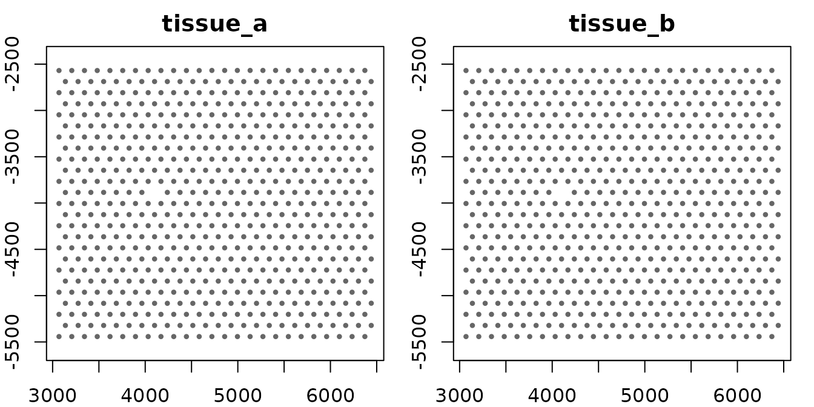
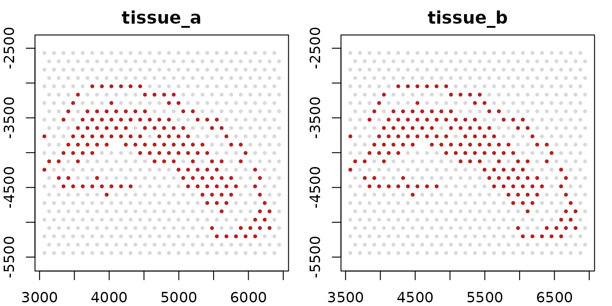
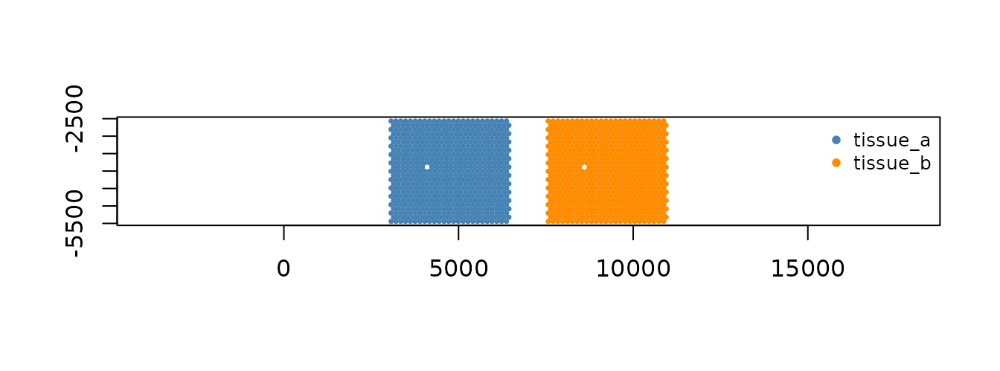

A giottoMulti holds several giotto objects
— one per sample — and lets you analyze them together without merging
them. Each sample keeps its own spatial data and coordinate frame. What
the samples share, such as a joint expression matrix, joint metadata or
an integrated embedding, lives on the multi.
Use one when the samples share a feature panel and you want joint
analysis across them while still being able to address, plot and edit
each sample on its own. If the samples are really one specimen and you
want a single coordinate system, joinGiottoObjects() is the
better fit; see the comparison at the end.
Building one
createGiottoMulti() takes a named list of
giotto objects. The names become the sample names.
library(GiottoClass)
mg <- createGiottoMulti(list(
tissue_a = GiottoData::loadGiottoMini("visium", verbose = FALSE),
tissue_b = GiottoData::loadGiottoMini("visium", verbose = FALSE)
))
mg
#> An object of class giottoMulti
#> 2 child object(s):
#> tissue_a: 624 cells, 634 features
#> tissue_b: 624 cells, 634 features
#> view: 1248 / 1248 cells, 634 / 634 features
#> spat_unit: cell (2)
#> feat_type: rna (2)
#> values: raw (2)The two samples here are copies of the same mini dataset, which keeps the example small; everything below works the same with genuinely different samples.
A multi behaves like a named list of its samples:
Cell IDs are qualified by sample
Two samples can contain the same cell ID, so the multi refers to
cells as sample::cell_ID:
head(spatIDs(mg), 3)
#> [1] "tissue_a::AAAGGGATGTAGCAAG-1" "tissue_a::AAATGGCATGTCTTGT-1"
#> [3] "tissue_a::AAATGGTCAATGTGCC-1"
head(spatIDs(mg, local = TRUE), 3) # the IDs inside each sample
#> [1] "AAAGGGATGTAGCAAG-1" "AAATGGCATGTCTTGT-1" "AAATGGTCAATGTGCC-1"
length(spatIDs(mg, object = "tissue_b")) # one sample's cells
#> [1] 624Feature IDs are shared across samples, so they are not qualified.
Reading data
The getters work on a multi as they do on a giotto, with
a samples = argument to pick which samples to read.
Tabular data — cell metadata, expression, feature
metadata — comes back as one joint table across the samples. Cell
metadata carries a list_ID column naming each cell’s
sample:
cm <- getCellMetadata(mg, output = "data.table")
dim(cm)
#> [1] 1248 8
table(cm$list_ID)
#>
#> tissue_a tissue_b
#> 624 624
expr <- getExpression(mg, output = "matrix")
dim(expr)
#> [1] 634 1248
dim(getExpression(mg, output = "matrix", samples = "tissue_a"))
#> [1] 634 624Spatial data — locations, polygons, points, images, spatial networks — belongs to one sample each, so it comes back as a named list with one entry per sample:
locs <- getSpatialLocations(mg)
names(locs)
#> [1] "tissue_a" "tissue_b"
locs_a <- getSpatialLocations(mg, samples = "tissue_a")[["tissue_a"]]
locs_a
#> An object of class spatLocsObj : "raw"
#> spat_unit : "cell"
#> provenance: cell
#> dimensions: 624 3
#> preview :
#> sdimx sdimy cell_ID
#> <int> <int> <char>
#> 1: 5477 -4125 AAAGGGATGTAGCAAG-1
#> 2: 5959 -2808 AAATGGCATGTCTTGT-1
#> 3: 4720 -5202 AAATGGTCAATGTGCC-1
#>
#> ranges:
#> sdimx sdimy
#> [1,] 3069 -5442
#> [2,] 6441 -2568A small helper draws the spatial locations it is given, one panel per sample. It is reused below:
plot_samples <- function(locs, highlight = NULL, ...) {
op <- par(mfrow = c(1, length(locs)), mar = c(2, 2, 2, 1))
on.exit(par(op))
for (nm in names(locs)) {
xy <- locs[[nm]][]
plot(xy$sdimx, xy$sdimy, pch = 16, cex = 0.6, asp = 1,
col = if (is.null(highlight)) "grey40" else
ifelse(xy$cell_ID %in% highlight[[nm]], "firebrick", "grey85"),
main = nm, xlab = "", ylab = "", ...)
}
}
plot_samples(getSpatialLocations(mg))
Naming a set of samples: groups
A group is a name for several samples. Once registered, it works anywhere a sample name does:
gmultiGroup(mg, "pair") <- c("tissue_a", "tissue_b")
gmultiGroups(mg)
#> [1] "pair"
nrow(getCellMetadata(mg, output = "data.table", samples = "pair"))
#> [1] 1248Groups resolve when they are used, so a group keeps up as samples are added, renamed or removed. A group and a sample cannot share a name.
How samples line up: the mapping
A multi needs to know which content in each sample belongs together — which spatial unit, which feature type, which expression matrix. That is the mapping, and it is filled in automatically when the multi is built:
gmultiMapping(mg, "values")
#> $raw
#> tissue_a tissue_b
#> "raw" "raw"Each entry maps a name at the multi level to the name each sample
uses. Here both samples call their raw counts "raw". If one
sample used a different name, say "counts", you would say
so once, and every joint read would use it:
gmultiMapping(mg, "values", "raw") <- c(tissue_a = "raw", tissue_b = "counts")An NA entry means a sample deliberately does not
contribute to that handle. A sample that is supposed to contribute but
cannot is an error when the data is read, naming the sample.
Joint data and per-sample data
Joint tables are assembled from the samples the first time they are read. Anything written to the multi goes to the joint level and leaves the samples alone:
ids <- spatIDs(mg)
mg <- addCellMetadata(mg,
new_metadata = data.table::data.table(
cell_ID = ids,
batch = ifelse(startsWith(ids, "tissue_a"), "batch1", "batch2")),
by_column = TRUE, column_cell_ID = "cell_ID")
table(getCellMetadata(mg, output = "data.table")$batch)
#>
#> batch1 batch2
#> 624 624
"batch" %in% names(getCellMetadata(mg[["tissue_a"]], output = "data.table"))
#> [1] FALSESpatial data has no joint level, so it cannot be written through the multi:
setSpatialLocations(mg, locs_a)
#> Error:
#> ! [gmulti setSpatialLocations] a giottoMulti has no multi-level slot for spatial locations, deliberately: each one belongs to exactly one sample, so holding it here would make its owning sample a `sample::` prefix rather than where it lives. Write into the child and put the child back:
#> g <- mg[["<sample>"]]
#> g <- setSpatialLocations(g, x, ...)
#> mg[["<sample>"]] <- gTo change one sample, take it out, edit it, and put it back:
g <- mg[["tissue_b"]]
g <- spatShift(g, dx = 500)
mg[["tissue_b"]] <- g
range(getSpatialLocations(mg, samples = "tissue_b")[[1]][]$sdimx)
#> [1] 3569 6941Narrowing
subset() narrows the multi. With cells = it
keeps those cells in the joint analysis; with samples = it
keeps those samples, the same as mg[...]:
mg_small <- subset(mg, cells = head(spatIDs(mg), 100))
length(spatIDs(mg_small))
#> [1] 100
names(subset(mg, samples = "tissue_a"))
#> [1] "tissue_a"
names(mg["tissue_b"])
#> [1] "tissue_b"Narrowing by cell leaves each sample’s own spatial data untouched, so the full tissue is still there if you need it:
subset() returns a new object; the original
mg is unchanged.
Views: narrowing without changing the object
A view records a narrowing under a name instead of applying it. Build
one with the usual verbs and a view = argument, then read
through it with any getter:
mg <- subset(mg, leiden_clus == 1, view = "cluster1")
nrow(getCellMetadata(mg, output = "data.table"))
#> [1] 1248
nrow(getCellMetadata(mg, output = "data.table", view = "cluster1"))
#> [1] 324The same view narrows spatial reads, per sample:
c1 <- getSpatialLocations(mg, view = "cluster1")
plot_samples(getSpatialLocations(mg),
highlight = lapply(c1, function(x) x[]$cell_ID))
A view can also select samples. With samples = and
view =, subset() records a sample step, and
reads through the view skip the other samples entirely. One call can
record both a sample step and a filter:
mg <- subset(mg, leiden_clus == 1, samples = "tissue_b", view = "b_cluster1")
names(getSpatialLocations(mg, view = "b_cluster1"))
#> [1] "tissue_b"
table(getCellMetadata(mg, output = "data.table", view = "b_cluster1")$list_ID)
#>
#> tissue_b
#> 162Views travel with the object and can be copied between objects. See
vignette("view_and_space", package = "GiottoClass") for
crops, the other step kinds, and how views are stored.
Spaces: laying samples out
A space records coordinate transforms under a name. On a multi,
samples = says which samples a transform moves, which is
how you build a layout. Here tissue_b is moved beside
tissue_a without changing either sample’s data:
mg <- spatShift(mg, dx = 4000, space = "side_by_side", samples = "tissue_b")
laid_out <- getSpatialLocations(mg, space = "side_by_side")
xy <- rbind(
cbind(laid_out$tissue_a[], sample = "tissue_a"),
cbind(laid_out$tissue_b[], sample = "tissue_b"))
plot(xy$sdimx, xy$sdimy, pch = 16, cex = 0.5, asp = 1,
col = ifelse(xy$sample == "tissue_a", "steelblue", "darkorange"),
xlab = "", ylab = "")
legend("topright", legend = c("tissue_a", "tissue_b"), pch = 16,
col = c("steelblue", "darkorange"), bty = "n", cex = 0.8)
range(getSpatialLocations(mg, samples = "tissue_b")[[1]][]$sdimx) # native
#> [1] 3569 6941A space built this way gives each sample its own copy of the frame, so the samples stay independent: a job over it is one job per sample. When the samples should share one coordinate system — so that distances between them mean something — declare a combined space first, naming its members:
giottoSpace(mg, "atlas") <- combinedSpace(c("tissue_a", "tissue_b"))
mg <- spatShift(mg, dx = 4000, space = "atlas", samples = "tissue_b")
giottoSpace(mg, "atlas")
#> An object of class combinedSpace
#> space 'atlas' | 2 sample(s) share one coordinate system
#> members : tissue_a, tissue_b
#> steps : member{tissue_a,tissue_b} -> spatShift[tissue_b]Views and spaces combine: the view picks the cells, the space places them.
placed <- getSpatialLocations(mg, view = "cluster1", space = "side_by_side")
sapply(placed, function(x) c(cells = nrow(x[]), range(x[]$sdimx)))
#> tissue_a tissue_b
#> cells 162 162
#> 3069 7569
#> 6303 10803Analysis and plotting
The analysis functions in the Giotto package — normalization, dimension reduction, clustering, integration — work on a multi’s joint expression and write their results to its joint slots, alongside the per-sample data.
Plotting lives in GiottoVisuals. Spatial plots draw one panel per
sample and take the same samples =, view = and
space = arguments as the getters. Non-spatial plots (UMAP,
violin, dot plots) draw one plot across all samples; color by
list_ID to tell them apart:
GiottoVisuals::spatPlot2D(mg, samples = "pair", view = "cluster1")
GiottoVisuals::spatPlot2D(mg, space = "atlas")
GiottoVisuals::plotUMAP(mg, cell_color = "list_ID")
giottoMulti or joinGiottoObjects()?
Both put several samples into one workflow. They differ in what they keep.
giottoMulti |
joinGiottoObjects() |
|
|---|---|---|
| Each sample addressable by name | yes: samples =, groups |
no: merged into one object |
| Spatial data | stays with each sample, in its own frame | merged, with coordinate offsets |
| A sample on its own |
mg[["name"]] is a full giotto
|
not recoverable |
| Laying samples out | recorded spaces, changeable later | fixed at join time |
| Joint analysis | joint slots on the multi | the one object |
Pick giottoMulti when sample identity matters through
the analysis — QC, normalization, integration, per-sample plots, cohort
comparisons. Pick joinGiottoObjects() when the samples
really are one specimen and you want a single coordinate system.
See also
-
vignette("view_and_space", package = "GiottoClass")— views and spaces in depth. -
vignettes/articles/design_gmulti.Rmd— whygiottoMultiis built the way it is. -
?createGiottoMulti,?gmultiGroup,?gmultiMapping,?"subset-giottoMulti".